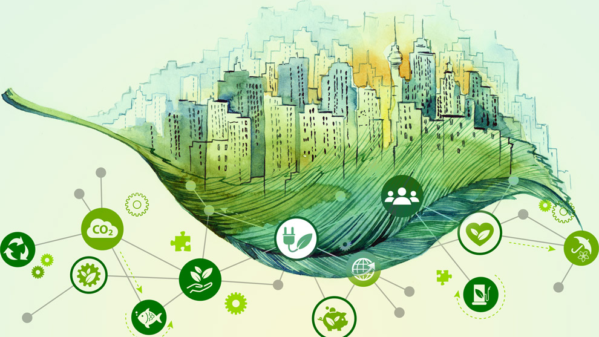
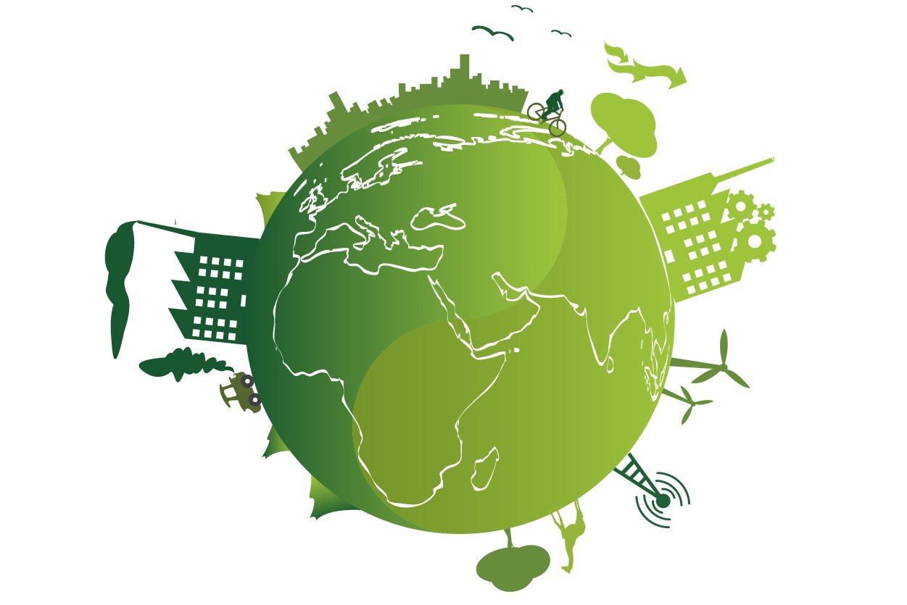

Vale la pena mencionar que la sustentabilidad ambiental se entiende como una condición de coexistencia armónica de la sociedad y su ambiente, donde la población actual puede satisfacer sus necesidades y mejorar su bienestar usando los recursos naturales disponibles, pero sin comprometer la calidad de vida de las generaciones venideras ni de las especies que habitan el planeta. La sustentabilidad ambiental es uno de los tres ejes fundamentales del concepto de desarrollo sustentable, tal como se definió en el Informe Brundtland (1987) que fue elaborado para la Organización de las Naciones Unidas (ONU) por la Comisión Mundial sobre Medio Ambiente y Desarrollo. Aquí, desarrollo sustentable significa satisfacer las necesidades del presente sin comprometer las necesidades de las generaciones futuras. En este sentido, el desarrollo sustentable no sólo contempla el progreso económico y material, sino que se plantea en armonía con el bienestar social y el aprovechamiento responsable de los recursos naturales.
Los otros dos ejes fundamentales del desarrollo sustentable son: la sustentabilidad económica, entendida como una serie de prácticas económicamente rentables y éticamente justas, regida por criterios de responsabilidad social y ambiental; y la sustentabilidad social, que persigue la equidad, lo que significa eliminación de la pobreza y que todos los estratos sociales se beneficien con el crecimiento económico. Se trata, pues, de alcanzar un bienestar social que brinde a toda la población la posibilidad de acceder a un buen nivel de vida y a las mismas oportunidades.
Sustentabilidad ambiental implica, en particular, evitar el impacto negativo de la actividad antropogénica sobre el clima. El cambio climático derivado del incremento del CO2 en la atmósfera se conoce desde hace aproximadamente 120 años, y desde hace 45 (1972) la ONU ha realizado conferencias internacionales sobre desarrollo sustentable y asuntos ambientales, en particular sobre cambio climático, siendo las realizadas en Río de Janeiro las más importantes y conocidas. Hoy, a 25 años de la primera Cumbre de la Tierra realizada en 1992 en aquel país, los informes muestran que los resultados no han sido del todo satisfactorios: la concentración de CO2 en la atmósfera sigue creciendo aceleradamente, tenemos una creciente tasa de pérdida de la biodiversidad y de los servicios ambientales; la pobreza y la brecha de la desigualdad no han disminuido de manera importante. La rapidez con que ocurren los cambios en la naturaleza debido a la interferencia humana supera con mucho la velocidad de respuesta de los gobiernos y las sociedades.